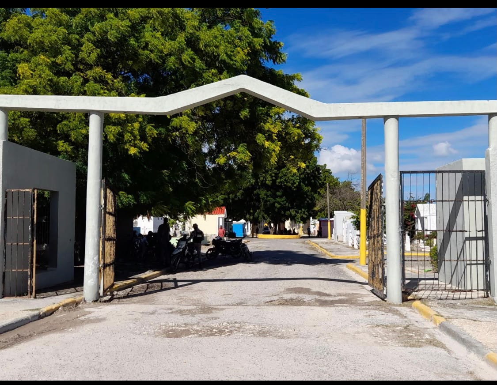

Entrada pública para GitHub Pages · Datos demo
Atención ciudadana y servicios municipales en un solo portal.
Portada V2 integrada para orientar a residentes, visitantes, personal municipal y brigadas sin duplicar la lógica de los módulos existentes.
Conoce tu municipio · Datos demo
Conoce tu municipio
Historia
Laguna Salada se presenta aquí con texto demostrativo para validar la experiencia visual del portal público. La información histórica debe ser confirmada por fuentes oficiales antes de producción.
Lugares emblemáticos
Palacio Municipal y espacios cívicos destacados. Contenido demo para integración con Institutional Content.

Patrimonio local
Ficha demo para mostrar lugares, horarios o reseñas institucionales verificables.
Autoridades municipales · Datos demo
Gobierno municipal
Atención municipal · Datos demo
Contactos y horario
Horario de atención
Lunes a viernes · 8:00 a. m. a 4:00 p. m. (demo)
Teléfono
+1 (000) 000-0000 · dato demo
Correo
contacto-demo@ayuntamiento.local
Operación interna · Accesos demo